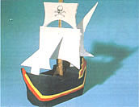
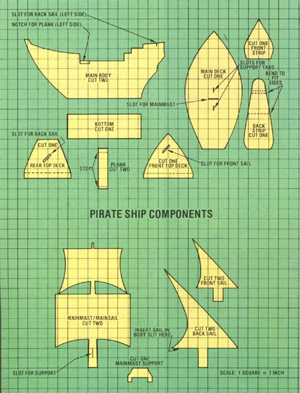

Store-bought toys aren't nearly as much fun as the ones you and your children make together!
When your young'uns are housebound on a rainy Saturday morning and near to bursting with ( mostly ) suppressed youthful energy - or, say, when the children are invited to a birthday party but there's not even a bit of extra room in your budget to buy a gift for them to give - that's the time to put on your very best Long John Silver-like "aye, me hearties" accent and call all hands on deck to help build the finest little cardboard pirate ship ever to sail the Sea of Imagination.
First, keeping in mind the fact that young crew members tend to have relatively short attention spans, quickly gather together a few basic supplies - a utility knife, scissors, white glue, masking tape, and some flat sheets of cardboard cut from an old carton or two - then hurry back to your fledgling shipbuilders, before they begin to plan a mutiny, and establish yourself firmly as the skipper on this project. (Of course, an adult should always supervise when youngsters are using scissors.)
COMPONENTS
First, obviously, you need to manufacture the parts for your man-of-wars. The accompanying illustrations show all the components on a scale of one square per inch . . . so in order to draw the pieces to true size, just count the squares along any given dimension and - using a ruler - pencil the actual measurement directly onto the cardboard. Or make a traceable pattern for each component by sketching the parts to full size on graph paper that's divided into one-inch blocks ... then cut out and draw around the templates to transfer the outlines to the corrugated panels.
With that task accomplished, you can put your crew to work snipping out the vessel's various elements. [EDITOR'S NOTE: Corrugated carton sides are very difficult to cut with scissors, so you may need to carve out the components yourself, using a utility knife. If you have young children who are determined to do more than watch, however, you might want to score (cut partly through) the outlines first, then let the youngsters go at the parts with their scissors. Or you could try constructing the ship from lighter cardboard (posterboard, the salvaged backs of drawing tablets, or what have you) to make the job easier on small fingers . . . although the finished toy will, of course, be less sturdy.]
Make two main body sections and planks, and a pair of each kind of sail (including the mainmast/mainsail unit). Then trim out one of each of the remaining components. Now glue the matching sail pieces, and the two planks, back to back . . . so that they're double-thick and therefore double-strong. (Do NOT fasten the body sections together.)
Next, cut out a pair of 1/4"-wide, 1"-long strips of cardboard, and affix one to each end of what will be the bottom side of the plank (the raised tips will serve as stops to keep the board from sliding all the way into or out of the ship). While the adhesive dries, make a one-inch incision in the mainmast as shown . . . insert the little saddlelike support piece into the opening, with the tabs facing down . . . and glue it in place.
As you can see from the diagrams, slots must also be cut in several other parts of the ship - to accommodate sails and sail supports - and a 1/2"-deep by 1"-wide notch must be carved out of the port side of the hull to receive the plank. (All of these jobs require a sharp knife, and therefore should likely be considered the skipper's duty.)
ASSEMBLY
At this point you're ready to begin putting your cardboard craft together. Before you start taping and gluing, though, consider that you'll want to remove the masking material once the adhesive has dried sufficiently to hold the pieces fast . . . so it's best to avoid gluing over the paper tape. And, since you'll be applying paste mostly to the inside surfaces of the ship, try to place the tape on the outside whenever possible.
Remember, too, that you may very well have to trim the components somewhat to make them all fit properly. Don't be afraid to do some custom tailoring . . . but do be careful not to get carried away with the operation, or you'll change the finished shape of the schooner.
Now, tape the bottom section to the main body pieces . . . and then fit the front and back strips in place (you'll have to bend the aft component somewhat, as shown by the dotted lines on the pattern). When all is positioned correctly, you'll have what is essentially a narrow boat without a deck or sails . . . but don't glue the parts together just yet!
Next, try fitting the main deck into the hull. At first the floor will likely seem much too large, but by carefully stretching and bending the sides of the boat, you should be able to convince the assembly to go together. If you must trim the deck to make it compatible with the hull, though, try shortening - rather than narrowing - the piece first, because the width of the deck establishes the craft's pleasingly rounded "shipshape" contour.
Once you've managed to persuade the parts to behave, set the deck aside for a moment and apply glue along all the interior seams where the main body pieces meet the front and back strips and bottom. Then lay the plank in its notch, bottom side down, so that the stopper strips will engage on either end.
Now, carefully position the deck in the hull and on top of the plank and-once you've made sure the "execution board" will slide in and out freely-tape and glue the floor securely (be careful not to slop any adhesive on or around the moving part). Next, take the front and rear top-deck sections, and - after folding down a 1/2" supporting panel on each, as shown by the dotted lines - fasten them in place, too.
The ship's body is complete . . . it's time to hoist your sails! Fit each mast into its respective slot on the main, front, or rear deck and cement the double-thick parts in place (be sure to add a dab of glue on the back sail, too, where the cardboard canvas fits into its stabilizer on the port side). Finally, let the entire assembly dry thoroughly . . . and remove the masking tape wherever possible.
DETAIL
Yo ho ho . . . you and your young swash-bucklers have done it! All your ship needs now is a good paint job. I prefer nontoxic acrylic colors, because they're permanent and easy to clean . . . but crayons or felt-tip markers are fine to use, too. As far as design goes . . . well, I copied the decorations on our ship from a children's storybook, but I'll bet your own imagination (or the creative energies of your pint-sized buccaneers) can come up with something good.
In any event, the end result is sure to be superior to those flimsy paper punch-out toys that are found in many children's books these days. You can't beat the low cost, either (after all, there's no price like free!) . . . and you and your children will have had a great time sharing the construction experience.
And let's see: If you can make a pirate ship out of cardboard, why not a biplane . . . or a castle, or a . . . hmmm . . . .
|
|
|
 |
|
 |
|
|